TEA
CAPICCHIONI
Studentessa di design.
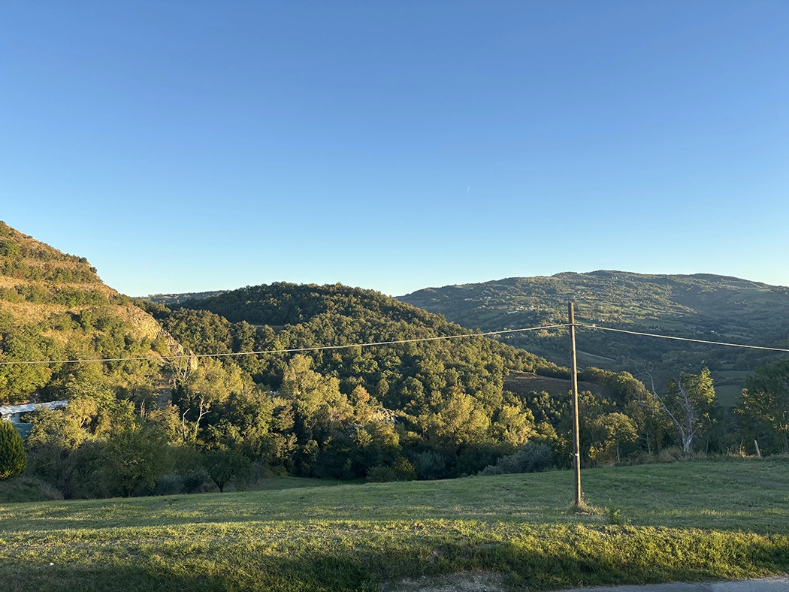
Cosa faccio
Frequento il secondo anno del corso di laurea in Design presso l'Università degli Studi della Repubblica di San Marino. Il mio percorso formativo è iniziato con studi in ambito tecnico-sanitario, come odontotecnico, esperienza che mi ha permesso di sviluppare capacità manuali.
Da dove vengo
Sono nata e cresciuta nella Repubblica di San Marino, un luogo che, pur essendo piccolo, offre un ambiente stimolante e ricco di ispirazione.
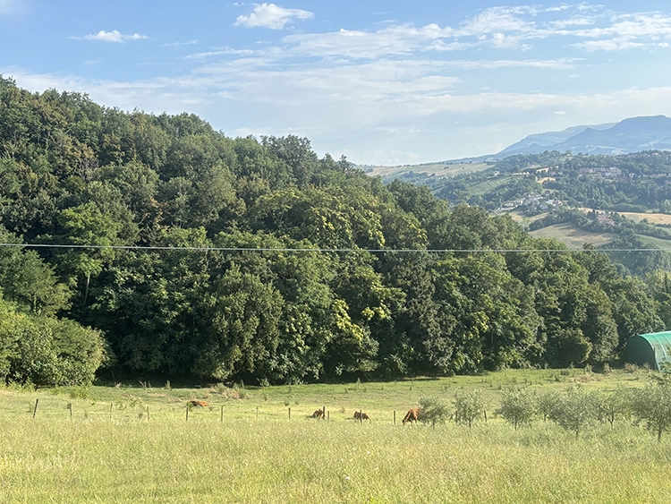
Progetti
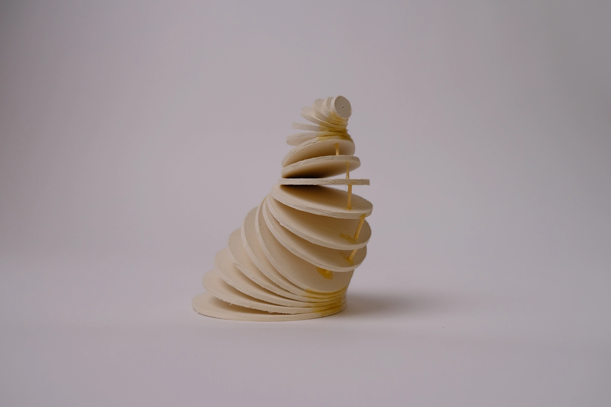
chiocciola
Modellino sulle trasformazioni geometriche, realizzato per il corso di Geometria.
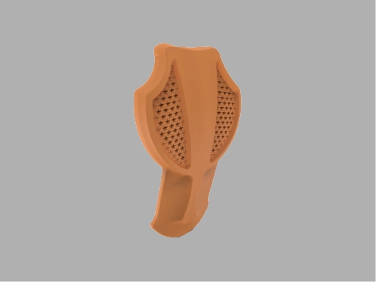
paraschiena
Modellino di un paraschiena pensato per sport invernali, realizzato per il corso di digitale 3D.
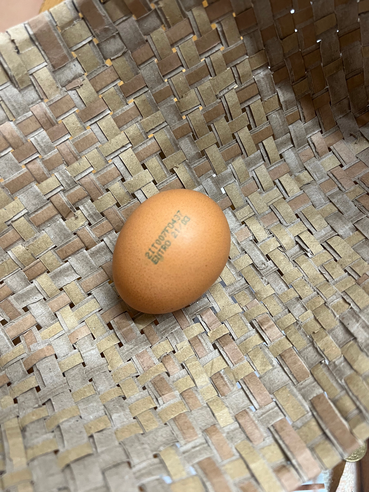
tramaglio
Progetto per la realizzazione di un sistema di protezione per un uovo resistente alle cadute, realizzato per il corso di prodotto.
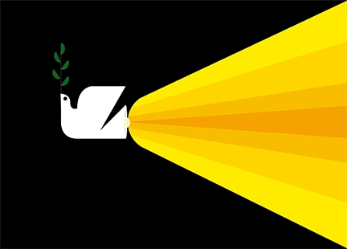
manifesto per la pace
Manifesto creato per un invito alla pace.
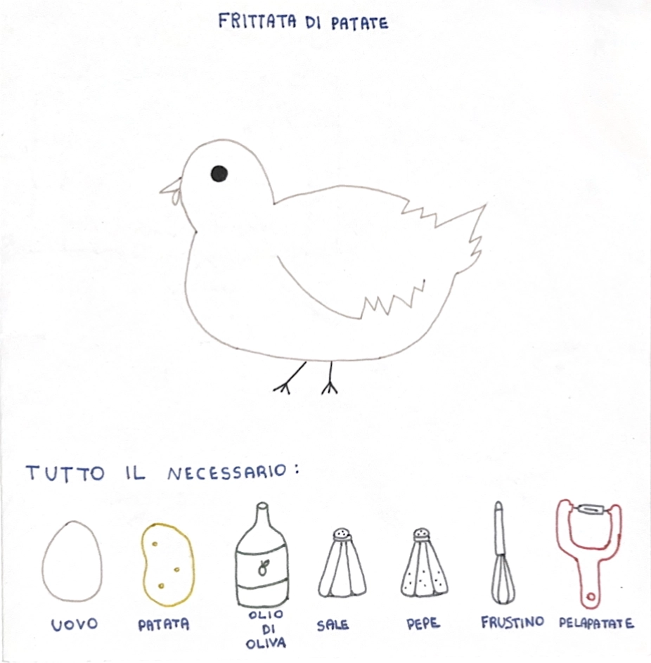
illustrazione ricetta
Un piccolo leporello che mostra la ricetta per la frittata di patate.
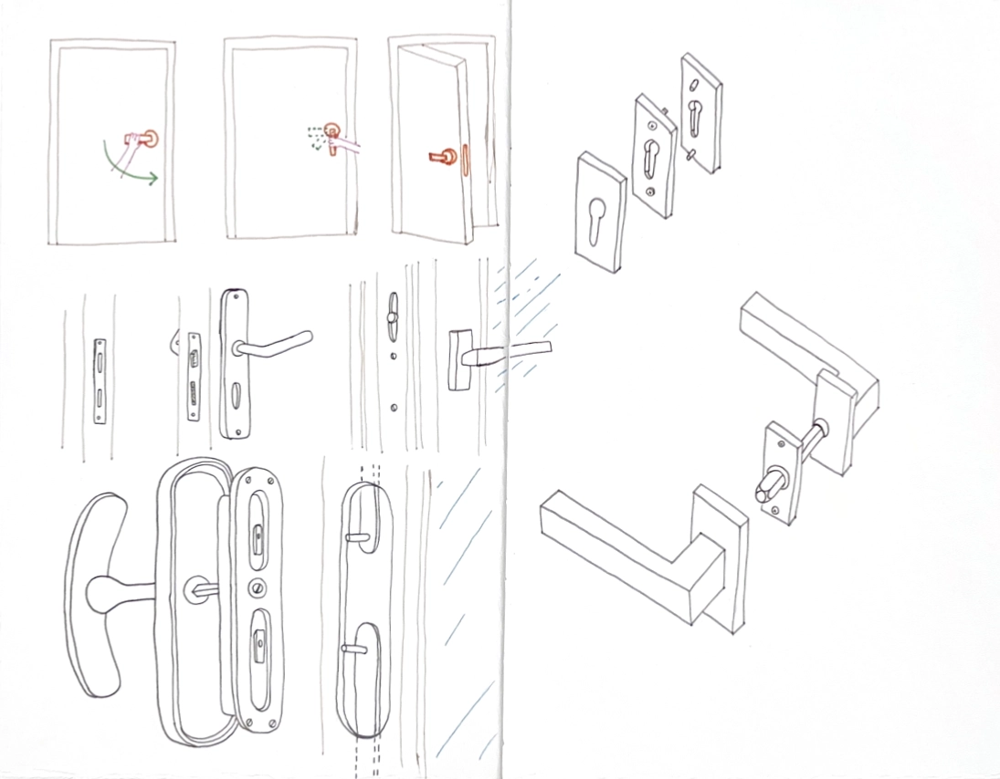
illustrazione meccanismo maniglia
Un piccolo libricino riguardante le tipologie di maniglie ed il loro funzionamento.
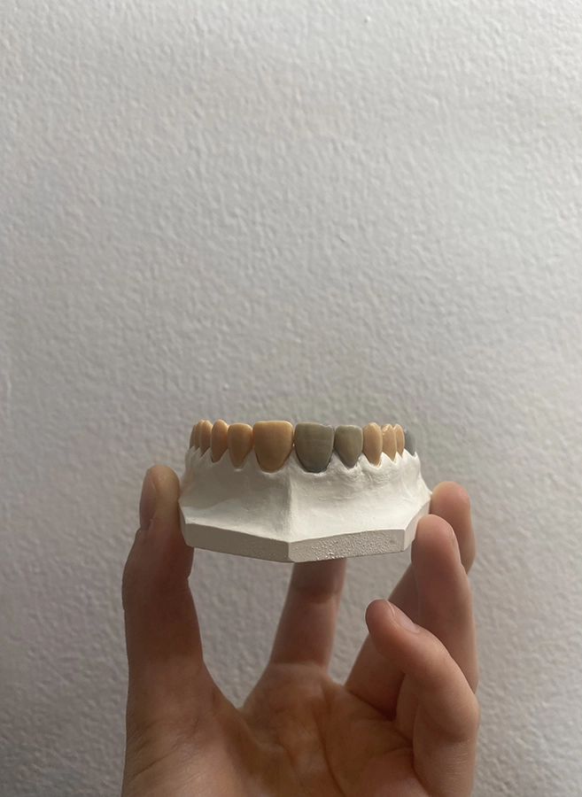
Progetti personali
Alcuni dei miei lavori realizzati a tempo perso, in questo caso si tratta di un ponte dentale circolare in cera.
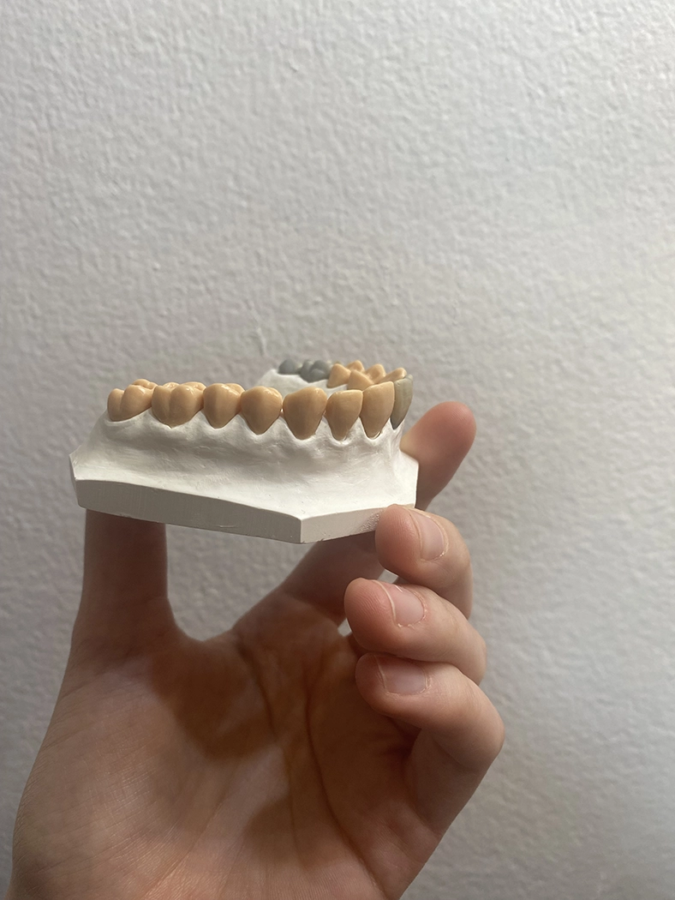
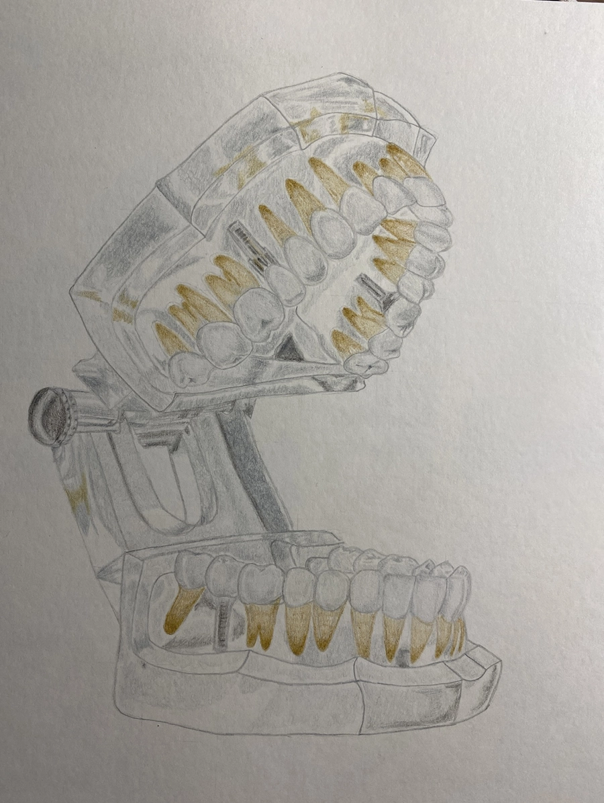